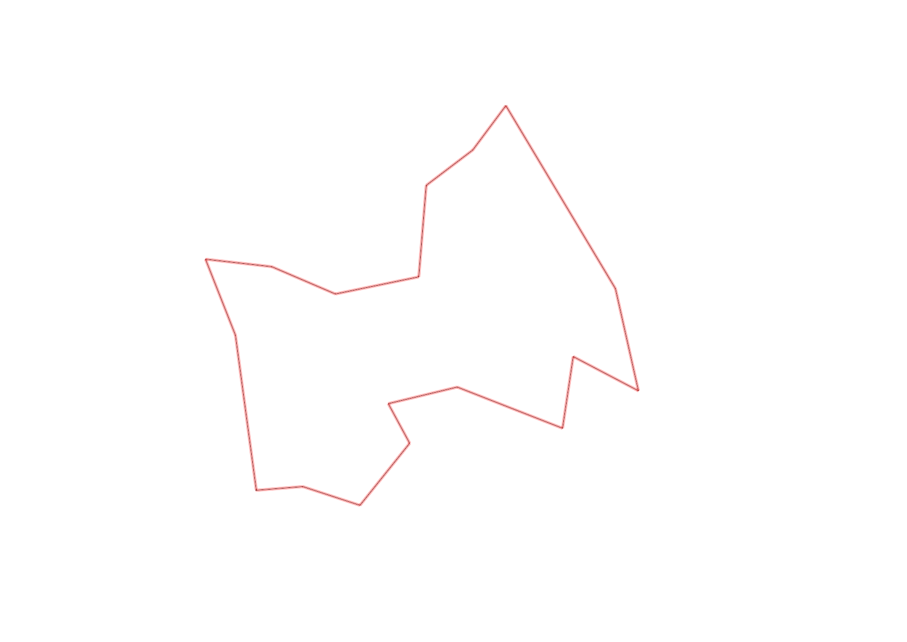
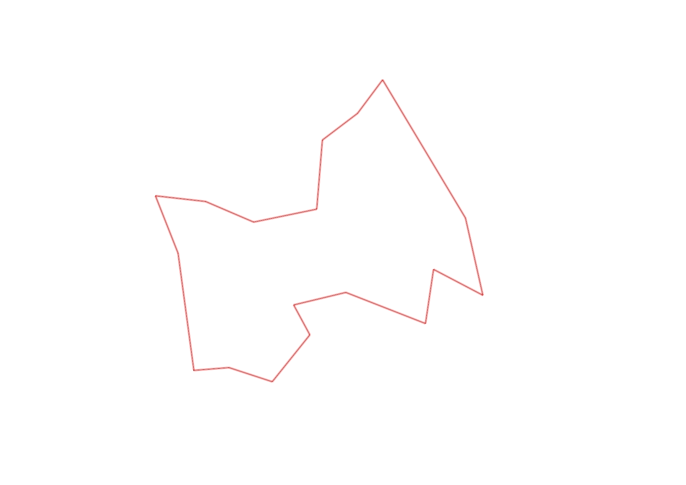

| Control |
Points |
Time Punched |
Distance |
Your Time |
Pace |
Place |
Fastest Time |
Median Time |
% Behind Fastest |
| 52 |
50 |
|
0.24 |
0:01:32 |
06:23 |
4 / 6 |
0:01:21 |
0:01:29 |
13% |
| 40 |
40 |
|
0.3 |
0:01:48 |
06:00 |
2 / 5 |
0:01:46 |
0:01:48 |
1% |
| 60 |
60 |
|
0.4 |
0:01:30 |
03:45 |
3 / 5 |
0:01:24 |
0:01:30 |
7% |
| 83 |
80 |
|
0.23 |
0:02:38 |
11:26 |
2 / 6 |
0:02:22 |
0:02:53 |
11% |
| 81 |
80 |
|
0.36 |
0:02:15 |
06:15 |
3 / 6 |
0:01:53 |
0:02:16 |
19% |
| 57 |
50 |
|
0.57 |
0:03:12 |
05:36 |
2 / 6 |
0:03:04 |
0:03:27 |
4% |
| 64 |
60 |
|
0.37 |
0:03:49 |
10:18 |
3 / 3 |
0:02:41 |
0:03:26 |
42% |
| 75 |
70 |
|
0.37 |
0:02:57 |
07:58 |
3 / 3 |
0:02:02 |
0:02:34 |
45% |
| 101 |
100 |
|
0.53 |
0:04:31 |
08:31 |
2 / 2 |
0:04:16 |
0:04:23 |
5% |
| 43 |
40 |
|
1.08 |
0:04:19 |
03:59 |
2 / 4 |
0:03:57 |
0:04:35 |
9% |
| 94 |
90 |
|
0.28 |
0:02:23 |
08:30 |
3 / 4 |
0:01:44 |
0:02:18 |
37% |
| 47 |
40 |
|
0.3 |
0:02:45 |
09:10 |
5 / 5 |
0:01:40 |
0:02:01 |
65% |
| 102 |
100 |
|
0.46 |
0:04:17 |
09:18 |
2 / 2 |
0:03:47 |
0:04:02 |
13% |
| 34 |
30 |
|
0.43 |
0:03:12 |
07:26 |
4 / 4 |
0:02:23 |
0:02:45 |
34% |
| 44 |
40 |
|
0.35 |
0:04:29 |
12:48 |
1 / 1 |
0:04:29 |
0:04:29 |
0% |
| 82 |
80 |
|
0.34 |
0:04:48 |
14:07 |
2 / 2 |
0:04:16 |
0:04:32 |
12% |
| 53 |
50 |
|
0.41 |
0:03:29 |
08:29 |
1 / 2 |
0:03:29 |
0:03:29 |
0% |
| Finish |
0 |
|
0.79 |
0:06:25 |
08:07 |
2 / 2 |
0:05:24 |
0:05:54 |
18% |
Total Distance Covered: 7.81km
Points Scored: 1060
Late Penalty: -20
Final Score: 1040
Total Time: 1hours 0minutes 19seconds
Efficiency: 133.16 points/km
 
